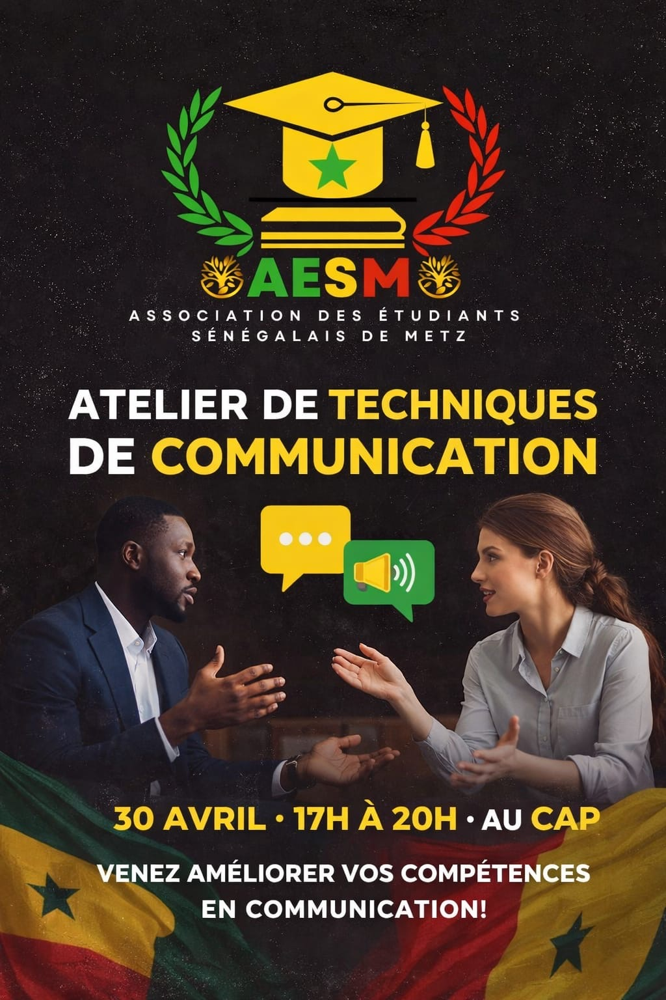

Arriver à Metz : le guide des premières semaines
Les repères utiles pour commencer ses études et son installation à Metz.
Lire l’articleInsertion
Les études ne s’arrêtent pas au dernier examen. Pour beaucoup d’étudiants, le passage vers le monde professionnel apporte de nouvelles questions : à qui parler, comment présenter son parcours, quels métiers découvrir et comment trouver les premiers contacts. La commission insertion de l’AESM est là pour préparer cette étape.

La mission première de cette commission est la mise en relation. Elle aide les étudiants à rencontrer des professionnels, à poser des questions sur les métiers et à mieux comprendre les réalités du monde du travail. Un échange, un conseil ou un contact peuvent parfois ouvrir une piste au moment où l’on commence à chercher un stage, une alternance ou un premier emploi.
L’insertion se prépare avant l’obtention du diplôme. Des ateliers de communication, des rencontres et des conseils peuvent aider à présenter une formation, raconter une expérience, préparer un entretien et prendre confiance dans les échanges professionnels. L’objectif n’est pas de donner une recette unique, mais de permettre à chacun d’avancer avec des repères et un réseau.
Accueillir les étudiants, les accompagner pendant leur installation et les aider à construire la suite de leur parcours répond à la même idée : personne ne devrait devoir traverser seul une étape importante. La commission insertion complète ainsi le travail des commissions pédagogique, sociale et d’accueil, avec un regard tourné vers l’après-campus.
Vous êtes étudiant et vous souhaitez échanger avec un professionnel, ou vous souhaitez proposer votre expérience ? Écrivez à l’AESM pour prendre contact avec l’association.
À lire aussi
Les repères utiles pour commencer ses études et son installation à Metz.
Lire l’article
Une rencontre pour apprendre, échanger et ouvrir de nouvelles pistes.
Lire l’article